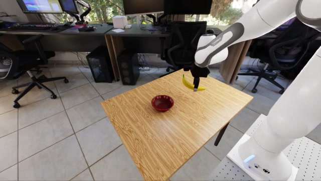
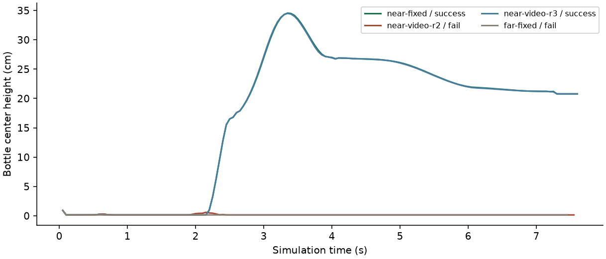

Tabero
炉台 9 / 9碗位置与炉台位置分别沿 x、y 调整 ±3 cm，碗绕竖轴旋转 ±15°。三种初态各回放三次，仿真读回全部符合请求。三条件共 312 帧已由 ACT 数据入口读回。
抽屉东侧也能复现。三次原生成功的最长合格窗口均为 7 帧，资格要求 10 帧。各条件只使用各自任务的源示教 #4。
查看连续窗口 ↗
验收结果
碗位置与炉台位置分别沿 x、y 调整 ±3 cm，碗绕竖轴旋转 ±15°。三种初态各回放三次，仿真读回全部符合请求。三条件共 312 帧已由 ACT 数据入口读回。
抽屉东侧也能复现。三次原生成功的最长合格窗口均为 7 帧，资格要求 10 帧。各条件只使用各自任务的源示教 #4。
查看连续窗口 ↗从原生香蕉和碗的坐标出发，设置三档前后位置与两档横向位置，逐个匹配物理初态。单次筛查有四个实例达到原生成功。
选中的近侧实例用相同初态复验三次，均达到抓起、搬运、目标向上支撑、释放撤手与连续稳定要求。该实例可作为开发用的数据采集候选。
查看六个初态 ↗在独立的 6.0 环境中保留原机器人、GS Mini 和预抓取协议。四个条件参数经原生任务入口写入，并在初态和抓取姿态中读回。
同一近架初态与 seed 重复三次，两次通过原生判据，一次瓶体留在低处。远架一次失败。两条成功示教分别保存 320 帧和 319 帧，均含双相机和双触觉。
查看迁移记录 ↗输入、物理过程与输出
按后端选择一次运行。每个视频都有对应的请求、原生回读或评分记录。编译阶段停止的案例显示诊断图。
生成接口
香蕉已能通过目录映射落到真实 USD。缺失的六棱柱走程序化网格路径，经 RoboTwin 的原生物体加载器落到 SAPIEN 桌面。通用 x2env 的文字和图片在 600 秒复跑中超时，视频提案未通过输入身份检查。本机此次部署配置了本地目录和模型；网页检索、开放式重建与 Genesis 尚缺运行时绑定。
历史故障记录中的十个方块坐标只把场景质心移动约 3.6 mm。带阶段强调的需求目前只改变布局，阶段采样没有执行证据。
图片模型能识别碗和炉具。任务目标由显式任务描述提供，物理尺寸和初态来自原生后端。视频模型读取了带时间标记的八帧，原始 524 帧的解码、哈希与阶段顺序另行保留。
图片到炉台的绑定已接入真实条件回放。瓶视频与明确目标绑定后完成两次近架复跑，预抓取角由任务包指定。视频中被遮挡的放置、释放和精确尺寸仍需任务状态确认。
兼容性
隔离目录保留原机器人、GS Mini、预抓取和原生判据。重新编译了 CPython 3.12 的 UIPC 绑定、cuRobo 的五个 CUDA 扩展和 torch-scatter。瓶的 67,568 个体网格点及架子的 73 个体网格点均已载入。
姿态顺序修复前，架子和瓶体翻入地面，UIPC 拒绝初始化。其余迁移涉及 PhysX 事件、相机、关节状态张量和触觉垫随动。近架的目标位姿已写入教师；传感器双路在预抓取前就记录了明显的压入量。移动道具进行空载校验时，UIPC 的碰撞时间断言中止了运行。瓶体与架子的独立支撑力、释放后的稳定窗口仍缺证据。4、5、6 cm 罐体分别加载并执行过一次，三次均未达到抬升目标。
近架第一次 · 双相机与双触觉 ↗近架第二次 · 放置失败 ↗近架第三次 · 双相机与双触觉 ↗
逐次运行表 ↗ 瓶入架资格复核 ↗
复现与判定
Tabero 与 RoboLab 使用 Isaac Sim 6.2。UniVTAC 迁移使用 Isaac Sim 6.0.0.1 与 Torch 2.11.0+cu128。原始视频来自 UniVTAC 5.1。通过资格的实例均属于开发集。
目前可入开发目录的是三个炉台初态和复验过的香蕉、方块布局。Tabero 使用已登记的 GS Mini 开发光学参考，RoboLab 抓放探针使用 gujie 摩擦垫，并读取物体真值。正式 R16 还需要独立实例和源示教，补数的学习收益留待独立学生更新与评测检验。本页提供环境构造和数据接口的验收范围。